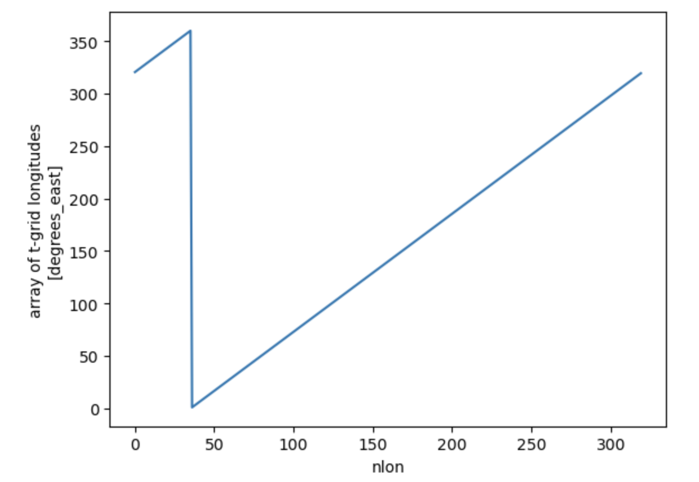
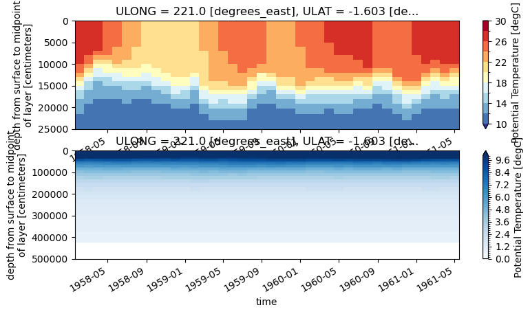
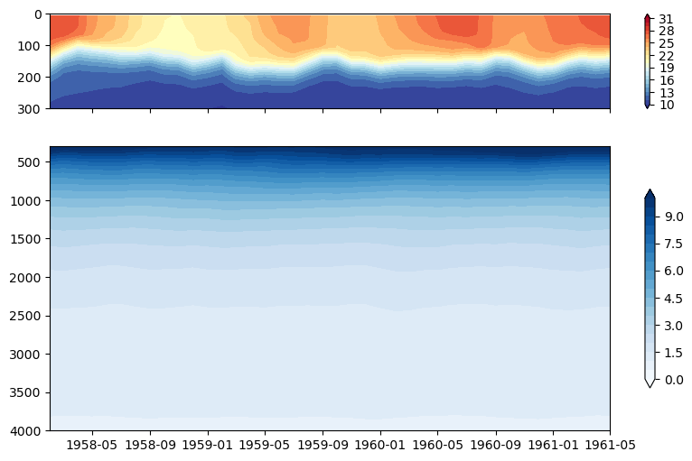
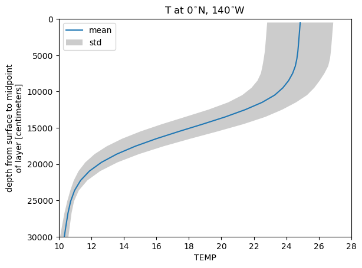

Basic Plotting#
BEFORE BEGINNING THIS EXERCISE - Check that your kernel (upper right corner, above) is NPL 2023a. This should be the default kernel, but if it is not, click on that button and select NPL 2023a.
This activity was developed primarily by Anna-Lena Deppenmeier and Gustavo Marques.
Setting up the notebook#
Here we load modules needed for our analysis
# loading modules
# %load_ext watermark # this is so that in the end we can check which module versions we used
%load_ext autoreload
import warnings
warnings.filterwarnings("ignore")
import datetime
import glob
import os
import warnings
import dask
import dask_jobqueue
import distributed
import matplotlib as mpl
import matplotlib.pyplot as plt
import numpy as np
import pandas as pd
import xarray as xr
import xgcm
from matplotlib import ticker, cm
import pop_tools
from cartopy import crs as ccrs, feature as cfeature
import cartopy
Define some functions#
These functions will be used more than once to read data and add a cyclic point. These could go in a package if you like.
# define function to get you the data you want relatively quickly
def read_dat(files, variables, pop=False):
def preprocess(ds):
return ds[variables].reset_coords(drop=True) # reset coords means they are reset as variables
ds = xr.open_mfdataset(files, parallel=True, preprocess=preprocess,
chunks={'time':1, 'nlon': -1, 'nlat':-1},
combine='by_coords')
if pop==True:
file0 = xr.open_dataset(files[0])
ds.update(file0[['ULONG', 'ULAT', 'TLONG', 'TLAT']])
file0.close()
ds
return ds
# define function to be able to plot POP output properly on cartopy projections
def pop_add_cyclic(ds):
nj = ds.TLAT.shape[0]
ni = ds.TLONG.shape[1]
xL = int(ni/2 - 1)
xR = int(xL + ni)
tlon = ds.TLONG.data
tlat = ds.TLAT.data
tlon = np.where(np.greater_equal(tlon, min(tlon[:,0])), tlon-360., tlon)
lon = np.concatenate((tlon, tlon + 360.), 1)
lon = lon[:, xL:xR]
if ni == 320:
lon[367:-3, 0] = lon[367:-3, 0] + 360.
lon = lon - 360.
lon = np.hstack((lon, lon[:, 0:1] + 360.))
if ni == 320:
lon[367:, -1] = lon[367:, -1] - 360.
#-- trick cartopy into doing the right thing:
# it gets confused when the cyclic coords are identical
lon[:, 0] = lon[:, 0] - 1e-8
#-- periodicity
lat = np.concatenate((tlat, tlat), 1)
lat = lat[:, xL:xR]
lat = np.hstack((lat, lat[:,0:1]))
TLAT = xr.DataArray(lat, dims=('nlat', 'nlon'))
TLONG = xr.DataArray(lon, dims=('nlat', 'nlon'))
dso = xr.Dataset({'TLAT': TLAT, 'TLONG': TLONG})
# copy vars
varlist = [v for v in ds.data_vars if v not in ['TLAT', 'TLONG']]
for v in varlist:
v_dims = ds[v].dims
if not ('nlat' in v_dims and 'nlon' in v_dims):
dso[v] = ds[v]
else:
# determine and sort other dimensions
other_dims = set(v_dims) - {'nlat', 'nlon'}
other_dims = tuple([d for d in v_dims if d in other_dims])
lon_dim = ds[v].dims.index('nlon')
field = ds[v].data
field = np.concatenate((field, field), lon_dim)
field = field[..., :, xL:xR]
field = np.concatenate((field, field[..., :, 0:1]), lon_dim)
dso[v] = xr.DataArray(field, dims=other_dims+('nlat', 'nlon'),
attrs=ds[v].attrs)
# copy coords
for v, da in ds.coords.items():
if not ('nlat' in da.dims and 'nlon' in da.dims):
dso = dso.assign_coords(**{v: da})
return dso
Setting up the Dask cluster#
Remember to:
change the project number if doing this outside the tutorial
potentially change the walltime depending on what you want to do
check the memory if you are loading a different dataset with different needs
check the number of cores if you are loading a different dataset with different needs
if "client" in locals():
client.close()
del client
if "cluster" in locals():
cluster.close()
cluster = dask_jobqueue.PBSCluster(
cores=2, # The number of cores you want
memory="8GB", # Amount of memory
processes=1, # How many processes
queue="casper", # The type of queue to utilize (/glade/u/apps/dav/opt/usr/bin/execcasper)
# log_directory="/glade/scratch/deppenme/dask/", # Use your local directory
resource_spec="select=1:ncpus=1:mem=8GB", # Specify resources
project="UESM0012", # Input your project ID here
walltime="02:00:00", # Amount of wall time
interface="ib0", # Interface to use
)
# cluster.adapt(maximum_jobs=24, minimum_jobs=2) # If you want to force everything to be quicker, increase the number of minimum jobs,
# # but sometimes then it will take a while until you get them assigned, so it's a trade-off
cluster.scale(12) # I changed this because currently dask is flaky, this might have to be adjusted during the tutorial
client = distributed.Client(cluster)
client
Get the data#
Note: the drop-down solutions, below, assume you used b.day2.1 output for plotting
# Set your username here:
username = "PUT_USER_NAME_HERE"
casename = 'b.day2.1'
# Here we point to the archive directory from your b.day2.1 simulation
pth = f"/glade/scratch/{username}/archive/" + casename + "/ocn/hist/"
# If you were unable to successfully run the b.day2.1 simulation, then feel free to use
# this provided simulation data instead:
#pth = '/glade/p/cesm/tutorial/tutorial_2023_archive/' + casename + '/ocn/hist/'
# Print path to screen
pth
Details on files#
b.day2.1.pop.h.0001-01.nc : one timestep year ???? and month -?? for a number of 2D and 3D variables and constants
b.day2.1.pop.h.nday1.0001-01-01.nc : daily timestep output for one month for SST, SST variance, SSS and (max) mixed layer depth
b.day2.1.pop.h.once.nc : (background) mixing values
b.day2.1.pop.hv.nc: viscosities
%%time
# how quick this is depends among other things on the availability of workers on casper
# you can check progress by clicking on the link for the cluster above which will show you the dask dashboard
flist = glob.glob(pth + casename + '.pop.h.00??-??.nc') #also might want to use just some years not all
ds_pop = read_dat(flist, ['TEMP', 'SHF'], pop=True)
ds_pop = ds_pop.sortby(ds_pop.time)
tlist = np.asarray([time.replace(year=time.year+1957) for time in ds_pop.time.values]) # this makes sure the time axis is useful
ds_pop['time'] = tlist
ds_pop["time"] = ds_pop.indexes["time"].to_datetimeindex()
ds_pop #print some meta-data to screen
Exercise 1#
Means of global Surface Heat Flux and Sea Surface Temperature
%%time
fig, ax = plt.subplots(1, 2, figsize=(12,3), sharex=True, sharey=True)
ds_pop.SHF.mean('time').plot(robust=True, ax=ax[0])
ax[0].set_title(r'Surface Heat Flux [W/m$^2$]')
ds_pop.TEMP.sel(z_t=0, method='nearest').mean('time').plot(robust=True, ax=ax[1], levels=np.arange(0,32,1))
ax[1].set_title(r'Sea Surface Temperature [$^{\circ}$C]')
#plt.savefig('basics_plot_1.png', bbox_inches='tight') # uncomment this to save your figure
Click here for the solution

Figure: Plotting solution.
Question:
Can you plot 50m ocean temperature instead of surface heat flux (SHF)?
Click here for hints
First, try using Xarray’s sel function to select temperature values at the POP z-axis (z_t) index closest to 50m (note that the values in z_t are in centimeters):
ds_pop.TEMP.sel(z_t=5000, method='nearest').mean('time').plot(robust=True, ax=ax[0], levels=np.arange(0,32,1))
What was the depth selected?
ds_pop.TEMP.sel(z_t=5000, method='nearest').mean('time').z_t.values
There is not a layer with the midpoint at 50m. There are layers with the midpoint at 45m and 55m.
(ds_pop.z_t)/100
To estimate the temperature at 50m, we can use Xarray’s interp to interpolate the values along the z-axis. By default, this function uses a linear interpolation method:
ds_pop.TEMP.interp(z_t=5000).mean('time').plot(robust=True, ax=ax[0], levels=np.arange(0,32,1))
Question:
Can you plot sea surface height (SSH) instead of surface heat flux (SHF)?
Click here for hints
We didn’t initially load SSH as a variable we kept, so you will need to do that above.
ds_pop = read_dat(flist, ['TEMP', 'SHF','SSH'], pop=True)
Always be aware of which variables might be in a file.
Once you’ve loaded SSH in the dataset, then plot it instead of SHF as follows:
ds_pop.SSH.mean('time').plot(robust=True, ax=ax[0])
ax[0].set_title(r'Sea Surface Height (cm)')
Question:
Can you plot standard deviations instead of means?
Click here for hints
Replace the .mean function with .std in the plotting call.
ds_pop.SHF.std('time').plot(robust=True, ax=ax[0])
ds_pop.TEMP.sel(z_t=0, method='nearest').std('time').plot(robust=True, ax=ax[1], levels=np.arange(0,32,1))
Exercise 2#
Let’s make some nicer plots! Have you noticed the x and y axes of the plots above? They are indices rather than longitudes and latitudes. POP output is on a curvilinear grid which means that the grid is not regularly (evenly) spaced. TLAT and TLONG are 2D variables depending on these indices, let’s have a look at how to make maps.
# learn what TLAT and TLONG look like
fig, ax = plt.subplots(1, 2, figsize=(12,3), sharex=True, sharey=True)
ds_pop.TLAT.plot(ax=ax[0], levels=np.arange(-90,95,5))
ax[0].set_title('TLAT')
ds_pop.TLONG.plot(ax=ax[1], levels=np.arange(0,370,10))
ax[1].set_title('TLONG')
Click here for the solution

Figure: Plotting solution.
Question
Can you see the irregularity in TLAT? What does the discontinuity in TLONG mean?
1. Make global maps#
# Add cyclic point
ds_pop_cyc = pop_add_cyclic(ds_pop)
%%time
# initiate the figure
fig = plt.figure(dpi=150, figsize=(12,3))
# add the first subplot
ax_shf = plt.subplot(1, 2, 1, projection=ccrs.Robinson(central_longitude=300.0))
pc = ax_shf.contourf(ds_pop_cyc.TLONG, ds_pop_cyc.TLAT, ds_pop_cyc.SHF.mean('time'),
transform=ccrs.PlateCarree(), cmap='RdYlBu_r', extend='both', levels=np.arange(-120,130,10))
ax_shf.set_global()
land = ax_shf.add_feature(
cartopy.feature.NaturalEarthFeature('physical', 'land', '110m',
linewidth=0.5,
edgecolor='black',
facecolor='darkgray'))
shf_cbar = plt.colorbar(pc, shrink=0.55, ax=ax_shf);
shf_cbar.set_label(r'[W/m$^{2}$]')
ax_shf.set_title('Surface Heat Flux')
# add the second subplot
ax_sst = plt.subplot(1, 2, 2, projection=ccrs.Robinson(central_longitude=300.0))
pc = ax_sst.contourf(ds_pop_cyc.TLONG, ds_pop_cyc.TLAT, ds_pop_cyc.TEMP.isel(z_t=0).mean('time'),
transform=ccrs.PlateCarree(), cmap='RdYlBu_r', extend='both', levels=np.arange(0,32,1))
ax_sst.set_global()
land = ax_sst.add_feature(
cartopy.feature.NaturalEarthFeature('physical', 'land', '110m',
linewidth=0.5,
edgecolor='black',
facecolor='darkgray'))
sst_cbar = plt.colorbar(pc, shrink=0.55, ax=ax_sst);
sst_cbar.set_label(r'[$^{\circ}$C]')
ax_sst.set_title('Sea Surface Temperature')
#plt.savefig('basics_plot_3.png', bbox_inches='tight') # uncomment this to save your figure
Click here for the solution

Figure: Plotting solution.
2. Make regional map over continental US#
# define the extent of the map
lonW = -140
lonE = -40
latS = 15
latN = 65
cLat = (latN + latS) / 2
cLon = (lonW + lonE) / 2
res = '110m'
# what does sea surface temperature around the US look like? (i.e. where would you like to go swimming..)
fig = plt.figure(figsize=(11, 8.5))
ax = plt.subplot(1, 1, 1, projection=ccrs.PlateCarree())
ax.set_title('')
gl = ax.gridlines(
draw_labels=True, linewidth=2, color='gray', alpha=0.5, linestyle='--'
)
ax.set_extent([lonW, lonE, latS, latN], crs=ccrs.PlateCarree())
ax.coastlines(resolution=res, color='black')
ax.add_feature(cfeature.STATES, linewidth=0.3, edgecolor='brown')
ax.add_feature(cfeature.BORDERS, linewidth=0.5, edgecolor='blue');
tdat = ax.pcolormesh(ds_pop.TLONG, ds_pop.TLAT, ds_pop.TEMP.isel(z_t=0, time=10), cmap='RdYlBu_r')
plt.colorbar(tdat, ax=ax, shrink=0.5, pad=0.1)
#plt.savefig('basics_plot_4.png', bbox_inches='tight')# uncomment this to save your figure
Click here for the solution

Figure: Plotting solution.
3. Make regional map over the Pacific#
There’s an awful lot of not-ocean over the continental US. Let’s look at the Pacific instead.
# define the extent of the map
lonW = -180
lonE = -60
latS = -30
latN = 30
cLat = (latN + latS) / 2
cLon = (lonW + lonE) / 2
res = '110m'
fig = plt.figure(figsize=(11, 8.5))
ax = plt.subplot(1, 1, 1, projection=ccrs.PlateCarree())
ax.set_title('SST')
gl = ax.gridlines(
draw_labels=True, linewidth=2, color='gray', alpha=0.5, linestyle='--'
)
ax.set_extent([lonW, lonE, latS, latN], crs=ccrs.PlateCarree())
ax.coastlines(resolution=res, color='black')
ax.add_feature(cfeature.STATES, linewidth=0.3, edgecolor='brown')
ax.add_feature(cfeature.BORDERS, linewidth=0.5, edgecolor='blue');
tdat = ax.pcolormesh(ds_pop.TLONG, ds_pop.TLAT, ds_pop.TEMP.isel(z_t=0, time=10), cmap='RdYlBu_r', vmin=15, vmax=31)
cbar = plt.colorbar(tdat, ax=ax, shrink=0.5, pad=0.1, ticks=np.arange(15,35,5))
cbar.set_label(r'[$^{\circ}$C]')
#plt.savefig('basics_plot_5.png', bbox_inches='tight')# uncomment this to save your figure
Click here for the solution

Figure: Plotting solution.
4. Plotting contours#
The figures above use pcolormesh to plot, but if you want to make filled contours using contourf you will need to make your dataset cyclical.
#ds_pop_cyc = pop_add_cyclic(ds_pop)# uncomment this if you have not run this line before
# define the extent of the map
lonW = -180
lonE = -60
latS = -30
latN = 30
cLat = (latN + latS) / 2
cLon = (lonW + lonE) / 2
res = '110m'
fig = plt.figure(figsize=(11, 8.5))
ax = plt.subplot(1, 1, 1, projection=ccrs.PlateCarree())
ax.set_title('SST')
gl = ax.gridlines(
draw_labels=True, linewidth=2, color='gray', alpha=0.5, linestyle='--'
)
ax.set_extent([lonW, lonE, latS, latN], crs=ccrs.PlateCarree())
ax.coastlines(resolution=res, color='black')
ax.stock_img() # something else than the boarders for a change
tdat = ax.contourf(ds_pop_cyc.TLONG, ds_pop_cyc.TLAT, ds_pop_cyc.TEMP.isel(z_t=0, time=10), cmap='RdYlBu_r', levels=np.arange(10,31,1))
cbar = plt.colorbar(tdat, ax=ax, shrink=0.5, pad=0.1, ticks=np.arange(15,35,5))
cbar.set_label(r'[$^{\circ}$C]')
#plt.savefig('basics_plot_6.png', bbox_inches='tight')# uncomment this to save your figure
Click here for the solution

Figure: Plotting solution.
Question:
Try looking at the Equatorial Atlantic Ocean or other region that interests you (Gulf of Mexico, Gulf of Maine, California Coast).
Click here for hints
Before plotting the region, you’ll need to modify the latitude/longitude bounds. Here are the bounds for the Equatorial Atlantic Ocean:
# define the extent of the map
lonW = -60
lonE = 20
latS = -30
latN = 30
cLat = (latN + latS) / 2
cLon = (lonW + lonE) / 2
res = '110m'
You can play with these to look at other regions of interest to you.
Question:
Try plotting other variables like sea surface height (SSH) or 50m temperature.
Click here for hints
See hints in exercise 1.
Exercise 3#
So far we’ve just looked at 2D ocean properties, primarily at the surface. But the ocean is deep and you might want to look at how a variable changes with depth. Here we’ll plot a cross section of an ocean variable with depth and how it changes with time.
The difficulty here is that you can’t easily select your lat and lon location, you need to find the nlon and nlat index first. As you could see from the TLAT and TLONG plots above, they don’t behave regularly, so this is a bit of a challenge. Let’s start with the equator (which is a bit easier than high up north).
# find the latitude that is the smallest, i.e. closest to the equator:
abs(ds_pop.TLAT).argmin(dim='nlat')
This shows you that the equator is not the same everywhere but it is within one index and so might be just on the south or north of the equator, you can choose either. (there is no latitude where lat=0, can you imagine why?)
# so let's say
ind_eq = 180
Let’s now find some location we might be interested in, say 140\(^{\circ}\)W
ds_pop.TLONG.isel(nlat=ind_eq).plot()
Click here for the solution

Figure: Plotting solution.
# the longitude goes from 0-360, so if we want 140W which is -140 we would need to select 220
ind_140w = abs(ds_pop.TLONG.isel(nlat=ind_eq)-220).argmin()
1. First Plot#
fig, ax = plt.subplots(2, 1, figsize=(9,4.5))
ds_pop.TEMP.isel(nlon=ind_140w, nlat=ind_eq).plot(y='z_t', ax=ax[0],
ylim=(250e2,0), levels=np.arange(10,32,2), cmap='RdYlBu_r')
ds_pop.TEMP.isel(nlon=ind_140w, nlat=ind_eq).plot(y='z_t', ax=ax[1],
ylim=(5000e2,0), levels=np.arange(0,10.2,0.2), cmap='Blues')
#plt.savefig('basics_plot_8.png', bbox_inches='tight')# uncomment this to save your figure
Click here for the solution

Figure: Plotting solution.
Question:
What is the vertical dimension? Which side of the plot is the ocean surface vs. the ocean floor?
Click here for hints
These plots have the surface of the ocean at the top of the plot. So it’s oriented physically with how we percieve the world. You should be aware of how the y axis changes when plotting figures like this to make them more easily interpretable.
2. Nicer axes#
fig, (ax_upper, ax_lower) = plt.subplots(2, 1, gridspec_kw={'height_ratios': [1, 3]},
figsize=(10,6), sharex=True)
dat_upper = ax_upper.contourf(ds_pop.time, ds_pop.z_t/100, ds_pop.TEMP.isel(nlon=ind_140w, nlat=ind_eq).T,
levels=np.arange(10,32,1), cmap='RdYlBu_r', extend='both')
ax_upper.set_ylim(300,0)
plt.colorbar(dat_upper, ax=ax_upper)
dat_lower = ax_lower.contourf(ds_pop.time, ds_pop.z_t/100, ds_pop.TEMP.isel(nlon=ind_140w, nlat=ind_eq).T,
levels=np.arange(0,10.5,0.5), cmap='Blues',
extend='both')
ax_lower.set_ylim(4000,300)
plt.colorbar(dat_lower, ax=ax_lower, shrink=0.7)
#plt.savefig('basics_plot_9.png', bbox_inches='tight')# uncomment this to save your figure
Click here for the solution

Figure: Plotting solution.
Question:
What happened to the vertical axis? Why does this make the plot easier to read?
Click here for hints
The ocean is deep and there is often different rates of change in a variable over the the upper ocean compared to the deep ocean. So using different scales and plotting them separately can be useful for analysis.
Exercise 4#
The previous exercise showed how to plot a vertical cross section of the ocean over time. But it can also be valuable to plot a profile of a variable with depth at a particular point either at one time, averaged over time, or a profile averaged over a set of points again at one time or averaged over time.
Here we will plot an average profile of temperature with depth.
ds_pop.TEMP.isel(nlon=ind_140w, nlat=ind_eq)
%%time
# let's load these calculated quantities so that we don't have to calculate them time and time again
t_0n140w_mean = ds_pop.TEMP.isel(nlon=ind_140w, nlat=ind_eq).mean('time').load()
t_0n140w_std = ds_pop.TEMP.isel(nlon=ind_140w, nlat=ind_eq).std('time').load()
# plot the mean profile
t_0n140w_mean.plot(y='z_t', ylim=(300e2,0), label='mean')
plt.xlim(10,28)
plt.title('T at 0$^{\circ}$N, 140$^{\circ}$W')
# let's add some error bars --> standard deviation
plt.fill_betweenx(ds_pop.z_t, t_0n140w_mean-t_0n140w_std, t_0n140w_mean+t_0n140w_std, color='black', alpha=0.2, edgecolor=None, label='std')
plt.legend()
#plt.savefig('basics_plot_10.png', bbox_inches='tight')# uncomment this to save your figure
Click here for the solution

Figure: Plotting solution.
Question:
Why is there grey shading on the plot above? i.e. How many ensembles have we included? What else could be causing a spread in the output?
Click here for hints
Here we take an average of the profiles in one location over time. But you could average over ensembles or over a region at one time, and both would also provide information about the variability in this quantity over depth.